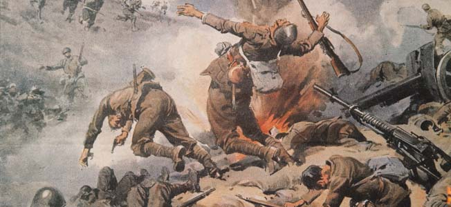

Essa pergunta pode ser facilmente respondida, um resumo: Atitudes estúpidas do Eixo, teimosia e excesso de confiança
Porém esse site não foi feito para respostas curtas, vamos nos aprofundar em cada um dos temas abaixo:
É de conhecimento comum que no início da guerra a Alemanha estava a todo vapor, com uma tática de guerra inovadora, a Blitzkrieg, com novas tecnologias bélicas, a própria indústria bélica estava no auge, desrespeitando os acordos assinados no tratado de versalhes. A invasão da Wehrmacht na Polônia foi bem sucedida, avançando 140 milhas em território polonês em apenas 1 semana e em 28 de setembro de 1939 a capital, Warsaw, se rendia ao avanço alemão, começava ali a expansão de Hitler.
Em 26 de Setembro de 1940 a Alemanha, Itália e Japão assinam o pacto tripartite, oficializando o Eixo, 1 mês depois, em 28 de Outubro a Itália invade a Grécia, após a falha de Mussolini em capturar o Egito, tendo sua defesa costeira massacrada pelo exército britanico, o exército italiano já se mostrava em péssimas condições de batalha. O ataque italiano a grécia, pela já capturada albania, foi extremamente falha, com o exército grego em menor número, eram mais de 2 soldados italianos para 1 grego, mesmo assim a Grécia rapidamente repeliu o ataque da Itália, no início de março de 1941 os gregos não só haviam empurrado o exército italiano para fora da Grécia como haviam tomado boa parte da Albania, isso forçou Hitler a dividir o exército que se preparava para a operação Barbarossa em 2 frentes para ajudar seu aliado Mussolini, o que dividiu as forças de ambas as frontes em duas.

Mas esse não foi nem de longe o maior erro da Alemanha na guerra, o maior erro foi uma única operação: A operação Barbarossa.